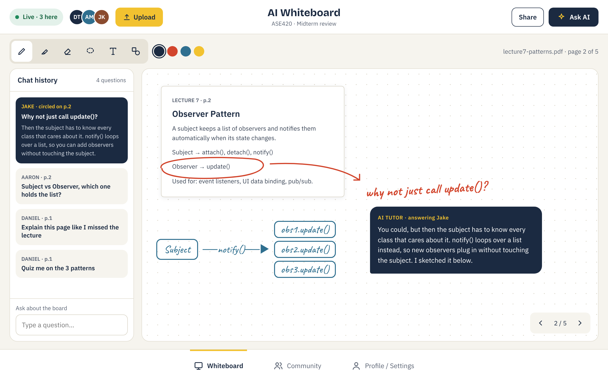
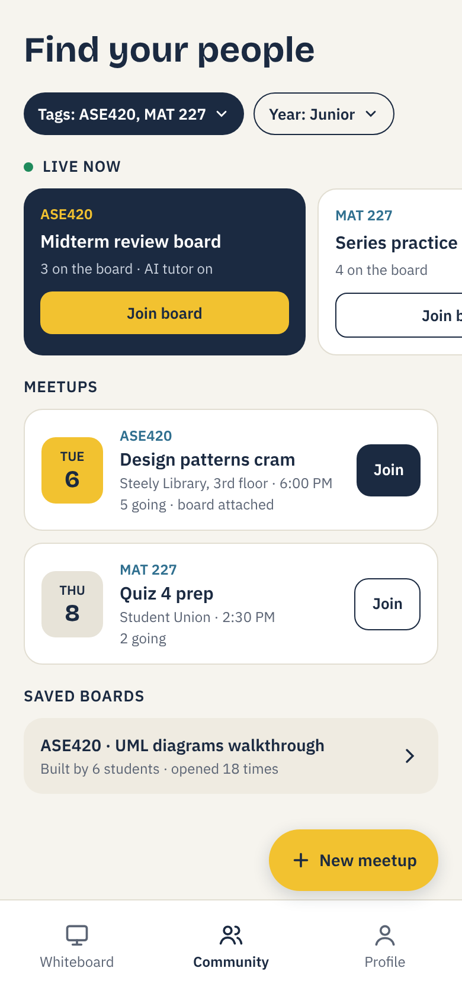

Norse Whiteboard
An AI whiteboard for NKU students. Upload your notes, slides or PDFs, draw on them with classmates, and ask the AI tutor about anything you circle.
How it works
- Whiteboard: Upload a file, mark it up, and hit Ask AI (or circle something) to get an explanation right on the board. Every question is saved in the chat history.
- Community: Tag boards with your classes (like ASE420). Find live boards to jump into, or set up an in-person meetup with a board attached.
- Saved boards: When a session ends, the board stays on the class page for the next group to study from.
Mockups


Original sketches


Planned stack
- Board: Excalidraw
- Login, file storage, live sync: Supabase
- AI: Gemini (free tier)